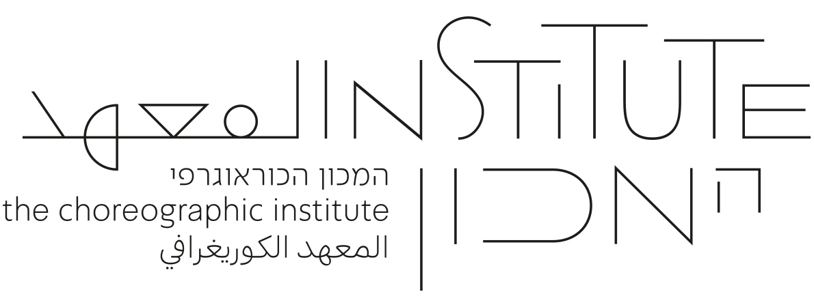
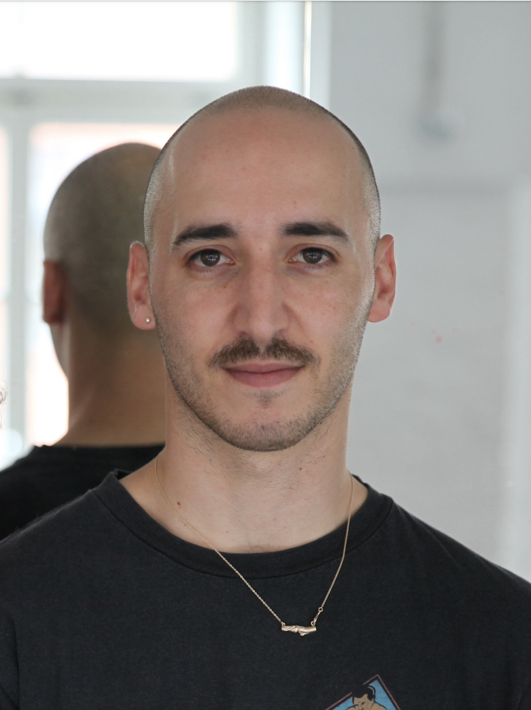
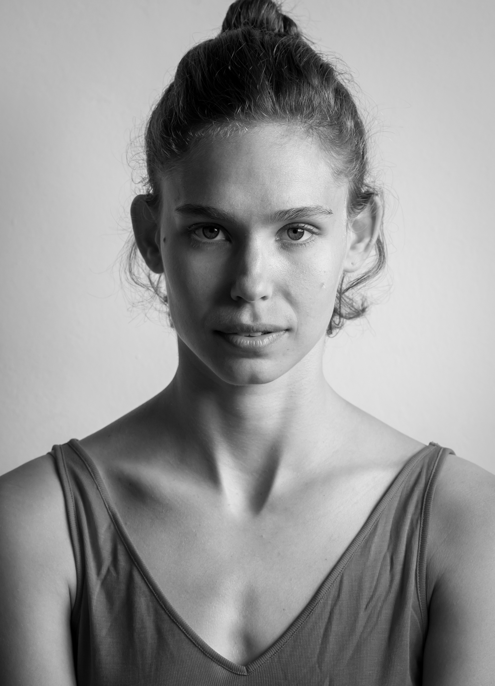
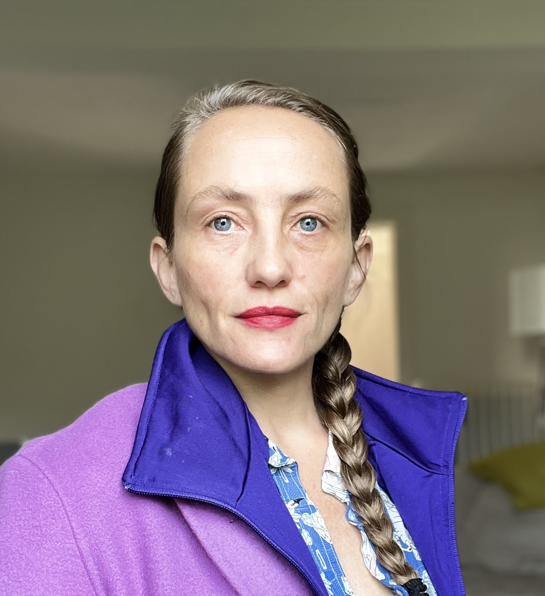
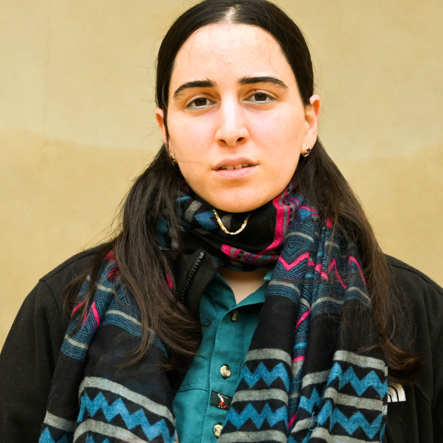
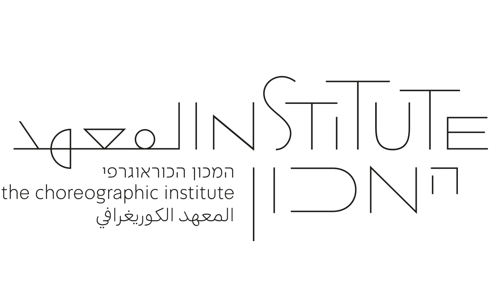

הראשון מסוגו בישראל · מוקדש לפיתוח האמנותי של כוריאוגרפיות.ים ורקדניות.ים עצמאיות.ים
הרחבת פרקטיקות של מחול וכוריאוגרפיה · מחקר אמנותי מעמיק ופיתוח קריירה אסטרטגי
תהליך והתנסות על פני תוצר · תמיכה באמנית, לא ביצירה
הרחבת פרקטיקות של מחול וכוריאוגרפיה · מחקר אמנותי מעמיק ופיתוח קריירה אסטרטגי
תהליך והתנסות על פני תוצר · תמיכה באמנית, לא ביצירה
01The Institute
Founded 2023 · Tel Aviv-Yafo
02The Landscape · The Need · The Paradigm Shift
מהפקת יצירות, לפיתוח אמניות.ים
השדה כיום
מסגרות מבודדות וקצרות טווח
פלטפורמות ממוקדות תוצר; דרישה לייצור יתר
תפיסת מחסור ותחרותיות
הישרדות על פני קיימוּת
התמקדות באמניות.ים צעירות.ים מאוד
מימון ומשאבים לא מספקים
תמיכה בתוצר, לא באמנית
הגישה — הערכים
מעורבות ארוכת טווח ומתמשכת
תהליך על פני תוצר; תמיכה ללא דרישה לייצור
אקוסיסטם של תמיכה הדדית
העצמה וייצוג של אמניות.ים
פיתוח לאמניות.ים בכל שלבי הקריירה
תמיכה הוליסטית ואסטרטגית
מרחב להתנסות, לשאילת שאלות ולכישלון
03The Programs · Artistic Development
Choreographers Circle
מעגל כוריאוגרפיות
תוכנית ליווי אמנותית שנתית לכוריאוגרפיות.ים · תמיכה הוליסטית וארוכת טווח · ללא ציפייה למוצר סופי · ליווי אישי אחד-על-אחד · תוכנית אצורה של דיונים, למידה משותפת ואורחות.ים
אמניות.י המעגל, בעבר ובהווה: דניאל גליה קינד, גלעד ירושלמי, נעה שדור, רייצ׳ל ארדוס, שקד מוכיח, אנדראה קוסטנזו מרטיני, אנאבל דביר, אוליביה קורט מסה, רוני חדש, טליה בק
Toolkit
ארגז כלים
תכנית מנטורינג של חצי שנה ל־20 רקדניות.ים עצמאיות.ים · בהנחיית מנטוריות.ים מנוסות.ים מהתחום · תמיכה מעשית, מקצועית ומנטלית בהתנהלות בשדה
Perspectives from the Field
פרספקטיבות מהשטח
תכנית רזידנסי לרקדניות.ים עצמאיות.ים · מחקר בפרקטיקה של הרקדנית-המבצעת, ללא תלות בכוריאוגרפית · ניסוח והעמקה של כלים, טכניקות, ידע גופני וניסיון

Choreographers Circle
04The Programs · Discourse · Field Response
Conversations on [Israeli] Dance
שיחות על מחול [ישראלי]
פלטפורמה מתמשכת לשיח — אירועים ציבוריים ופרטיים המפגישים אמניות.ים, הוגות.ים ואנשי.נשות תרבות מקומיות.ים ובינלאומיות.ים לשיחה על פרקטיקה אמנותית ועל מציאות העבודה בשדה מורכב ומשתנה.
First Series · Where We Stand Now
איפה אנחנו עומדות עכשיו — שיחות על מחול [ישראלי] אחרי ה־7 באוקטובר
כמעט שלוש שנים בתוך מציאות שהשתנתה עבור אמניות.ים מישראל — קשרים שנפגעו, הופעות שבוטלו, חרם, צנזורה ובידוד מעמיק. מרחב מוגן לשאול לא רק מה מתרחש סביבנו, אלא מה למדנו מן השבר, היכן יש לנו סוכנות, ואיזה תיקון או דמיון מחדש אפשריים כעת.
180 כוריאוגרפיות.ים, רקדניות.ים, מנהלות.י אמנות ופסטיבלים וחוקרות.ים — ישראליות.ים ובינלאומיות.ים, מ־15 מדינות.
Call to Action
קריאה לפעולה
יוזמה שהוקמה מיד לאחר ה־7 באוקטובר, בתגובה לעמדות אנטי-ישראליות גורפות בעולם המחול המקצועי ולפגיעות מקצועיות ברקדניות.ים, ביוצרות.ים ובחוקרות.ים ישראליות.ים בחו״ל. קואליציה של אנשי.נשות מקצוע ומוסדות מחול חברה יחד כדי להציע מרחב לדיאלוג, קבוצות חשיבה ועבודה, פרוטוקולים לביטחון בנסיעות ובמופעים, תיעוד מקרים פרטניים, ייעוץ משפטי במקרי הפרת חוזה על רקע אפליה, והפניה לאנשי.נשות מקצוע מהימנות.ים.
מעל 150 אמניות.ים ואנשי.נשות מקצוע מהמחול בישראל הצטרפו לפורומים המקוונים.
“
המעגל נתן לי כלים יעילים למגוון התמודדויות - בין אם בפן היצירתי, המחשבתי, הניסוחי והדרמטורגי ובין אם בפן ההפקתי, הכלכלי, הניהולי והאדמיניסטרטיבי. לשרה יש המון ידע לשתף ששדרג ודייק עבורי נושאים רבים ולמעגל עצמו יש פוטנציאל תמיכה ושיתוף שהם חשובים ומלמדים לא פחות.
The Circle gave me tools equal to every kind of challenge — the creative and the intellectual, the shaping of an idea and its dramaturgy, and no less the practical: producing, budgeting, managing, the quiet administrative work that holds it all together. Sarah has so much knowledge to share, and she sharpened and refined so much for me — and the Circle itself offers a support and exchange every bit as vital, and just as much a teacher.
רוני חדש
Roni Chadash
05Voices from the Field
06The People
Sarah Holcman01

Nitsan Margaliot03

Tamar Sonn02
Co-founded The Platform for
Independent Dancers · 2020
Independent Dancers · 2020
Formed the Institute · 2022
Field Notes
03ניצן מרגליות · מייסד שותף
כוריאוגרף, אוצר, רקדן, חוקר ומארגן קהילת מחול.
עבודתו של ניצן משתרעת על פני מופע, פרקטיקה ארכיונית, מחקר אמנותי ויוזמה ארגונית. הוא רקד באנסמבל בת שבע לפני שבנה קריירה בינלאומית עם עבודות שהוצגו ברחבי אירופה וארה״ב. הוא יזם פרויקט ארכיון-אלטרנטיבי, אצר במשותף פסטיבלים ותערוכות, ובשנת 2020 יזם עם תמר סון את הפלטפורמה עבור רקדניות.ים עצמאיות.ים בישראל.
כוריאוגרף, אוצר, רקדן, חוקר ומארגן קהילת מחול.
עבודתו של ניצן משתרעת על פני מופע, פרקטיקה ארכיונית, מחקר אמנותי ויוזמה ארגונית. הוא רקד באנסמבל בת שבע לפני שבנה קריירה בינלאומית עם עבודות שהוצגו ברחבי אירופה וארה״ב. הוא יזם פרויקט ארכיון-אלטרנטיבי, אצר במשותף פסטיבלים ותערוכות, ובשנת 2020 יזם עם תמר סון את הפלטפורמה עבור רקדניות.ים עצמאיות.ים בישראל.
02תמר סון · מייסדת שותפה
רקדנית, אסיסטנטית לכוריאוגרפית, פעילת ויזמת קהילת מחול.
הקריירה של תמר משתרעת על פני מופע, שיתופי פעולה וארגון. היא הופיעה בעבודותיהן.ם של מגוון רחב של להקות וכוריאוגרפיות.ים, ומאז 2019 היא משתפת פעולה ומשמשת אסיסטנטית לכוריאוגרפית קאט ואלאסטור הפועלת בברלין. בשנת 2020 יזמה יחד עם ניצן מרגליות את הפלטפורמה עבור רקדניות.ים עצמאיות.ים בישראל, מתוך בניית תנאים ברי-קיימא לעובדות.ים העצמאיות.ים בשדה.
רקדנית, אסיסטנטית לכוריאוגרפית, פעילת ויזמת קהילת מחול.
הקריירה של תמר משתרעת על פני מופע, שיתופי פעולה וארגון. היא הופיעה בעבודותיהן.ם של מגוון רחב של להקות וכוריאוגרפיות.ים, ומאז 2019 היא משתפת פעולה ומשמשת אסיסטנטית לכוריאוגרפית קאט ואלאסטור הפועלת בברלין. בשנת 2020 יזמה יחד עם ניצן מרגליות את הפלטפורמה עבור רקדניות.ים עצמאיות.ים בישראל, מתוך בניית תנאים ברי-קיימא לעובדות.ים העצמאיות.ים בשדה.
01שרה הולצמן
מייסדת שותפה · מנהלת אמנותית ומנכ״לית
אמנית מחול, מנהלת אמנותית, אוצרת ומפיקה עם מעל 20 שנה בשדה.
בין תפקידיה הקודמים: מרכז המחול גיבני, Movement Research ו־92nd Street Y (ניו יורק) — אצירה וניהול של תוכניות רזידנסי, סדרות עבודה-בתהליך ותוכניות משאבים לאמניות.ים; ותוכנית ה־ MFA במחול של אוניברסיטת הולינס ופסטיבל המחול האמריקאי. 2015–2022 · מנהלת תוכניות ויחסים בינלאומיים במרכז סוזן דלל למחול — אחראית על אצירה בינלאומית, ניהול ״חשיפה בינלאומית״ ויזום תוכניות פיתוח כוריאוגרפיות והרזידנסים הראשונים של המרכז.
מייסדת שותפה · מנהלת אמנותית ומנכ״לית
אמנית מחול, מנהלת אמנותית, אוצרת ומפיקה עם מעל 20 שנה בשדה.
בין תפקידיה הקודמים: מרכז המחול גיבני, Movement Research ו־92nd Street Y (ניו יורק) — אצירה וניהול של תוכניות רזידנסי, סדרות עבודה-בתהליך ותוכניות משאבים לאמניות.ים; ותוכנית ה־ MFA במחול של אוניברסיטת הולינס ופסטיבל המחול האמריקאי. 2015–2022 · מנהלת תוכניות ויחסים בינלאומיים במרכז סוזן דלל למחול — אחראית על אצירה בינלאומית, ניהול ״חשיפה בינלאומית״ ויזום תוכניות פיתוח כוריאוגרפיות והרזידנסים הראשונים של המרכז.
07The New Program · 2027
Body of Work
גוף עבודה
תכנית פיילוט של שהויות אמן (רזידנסי) ארוכות טווח לפיתוח אמנותי עבור כוריאוגרפיות.ים, רקדניות.ים וקהילת המחול המקצועית. ארבע קבוצות עבודה, וכל אחת תורכב מכוריאוגרפית אחת,
5–15 רקדניות.ים ומלוות.ים מתחומי הדרמטורגיה, הכתיבה וחקר המחול. כל קבוצה תשתתף ברזידנסי סטודיו בן חודשיים של מחקר אמנותי ללא ציפייה לתוצר סופי — פיתוח חומרים כוריאוגרפיים חדשים או קיימים, רפרטואר, אימפרוביזציה ופרקטיקות מופע.
5–15 רקדניות.ים ומלוות.ים מתחומי הדרמטורגיה, הכתיבה וחקר המחול. כל קבוצה תשתתף ברזידנסי סטודיו בן חודשיים של מחקר אמנותי ללא ציפייה לתוצר סופי — פיתוח חומרים כוריאוגרפיים חדשים או קיימים, רפרטואר, אימפרוביזציה ופרקטיקות מופע.
Confirmed Partners
בכורי העיתים
המרכז הערבי יהודי ביפו
המרכז הערבי יהודי ביפו
In Progress
הוגשה בקשה למועצת מפעל הפיס
גיוס תקציב ושותפים נוספים
גיוס תקציב ושותפים נוספים

08The Future
מה שנדרש כדי לצמוח
תמיכה בפרויקטים
תקציבים עבור תוכניות
שותפויות סטודיו
חללי סטודיו ומרחבי מפגש לאירוח רזידנסים ואירועים
שותפויות מוסדיות
שותפויות לשיתוף פעולה · שילוב המכון במסגרות ויוזמות תרבותיות קיימות כשכבת תמיכה נוספת
סנגור והכרה
ביסוס המכון כעוגן בתשתית המחול המקצועית של תל אביב-יפו · הכללה במימון התרבות העירוני והממשלתי
Noa Shadur · Entropy · photo Gadi Dagon
”
The Choreographers Circle was an amazing experience. Sharing my practice, doubts, and questions with other makers holds incredible power for growth and development. Being a choreographer takes on a whole new meaning when it becomes a shared experience.

Olivia Court Mesa
אוליביה קורט מסה

אנאבל דביר
Annabelle Dvir
אני חשה בדידות עצומה מרבית מהזמן ומודה על רגעים של שיתוף מעמיק, תמיכה ורגעי מחשבה קולקטיבית. תקופה ארוכה ומתמשכת עם מפגשים חשובים ומגוונים. שיתוף, למידה והכוונה אישית בהם הרגשתי מראות שונות-חדשות להתבונן על השדה, על חיי היצירה שלי ובמקביל לאנסמבל מתפתח. על קשיים ופריחה בו במקביל. משמעותי בכל שלב.
09Voices from the Field

www.choreoinstitute.org